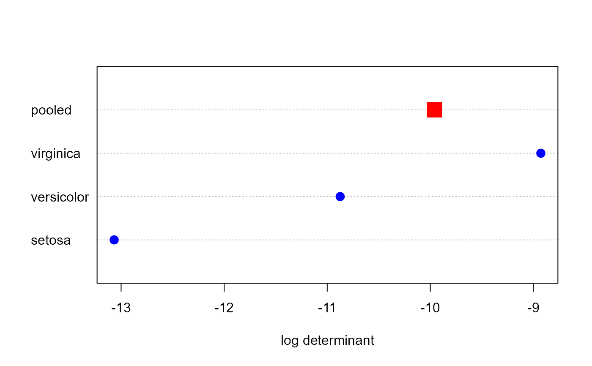

boxM performs the Box's (1949) M-test for homogeneity of covariance
matrices obtained from multivariate normal data according to one or more
classification factors. The test compares the product of the log
determinants of the separate covariance matrices to the log determinant of
the pooled covariance matrix, analogous to a likelihood ratio test. The test
statistic uses a chi-square approximation.
Arguments
- Y
The response variable matrix for the default method, or a
"mlm"or"formula"object for a multivariate linear model. IfYis a linear-model object or a formula, the variables on the right-hand-side of the model must all be factors and must be completely crossed, e.g.,A:B- ...
Arguments passed down to methods.
- group
a factor defining groups, or a vector of length n doing the same.
- data
a numeric data.frame or matrix containing n observations of p variables; it is expected that n > p.
- object
a
"boxM"object for thesummarymethod- digits
number of digits to print for the
summarymethod- cov
logical; if
TRUEthe covariance matrices are printed.- quiet
logical; if
TRUEprinting from thesummaryis suppressed
Value
A list with class c("htest", "boxM") containing the following
components:
- statistic
an approximated value of the chi-square distribution.
- parameter
the degrees of freedom related of the test statistic in this case that it follows a Chi-square distribution.
- p.value
the p-value of the test.
- cov
a list containing the within covariance matrix for each level of
grouping.- pooled
the pooled covariance matrix.
- logDet
a vector containing the natural logarithm of each matrix in
cov, followed by the value for the pooled covariance matrix- means
a matrix of the means for all groups, followed by the grand means
- df
a vector of the degrees of freedom for all groups, followed by that for the pooled covariance matrix
- data.name
a character string giving the names of the data.
- method
the character string "Box's M-test for Homogeneity of Covariance Matrices".
Details
As an object of class "htest", the statistical test is printed
normally by default. As an object of class "boxM", a few methods are
available.
There is no general provision as yet for handling missing data. Missing data are simply removed, with a warning.
As well, the computation assumes that the covariance matrix for each group is non-singular, so that \(log det(S_i)\) can be calculated for each group. At the minimum, this requires that \(n > p\) for each group.
Box's M test for a multivariate linear model highly sensitive to departures from multivariate normality, just as the analogous univariate test. It is also affected adversely by unbalanced designs. Some people recommend to ignore the result unless it is very highly significant, e.g., p < .0001 or worse.
The summary method prints a variety of additional statistics based on
the eigenvalues of the covariance matrices. These are returned invisibly,
as a list containing the following components:
logDet- log determinantseigs- eigenvalues of the covariance matriceseigstats- statistics computed on the eigenvalues for each covariance matrix:product: the product of eigenvalues, \(\prod{\lambda_i}\);sum: the sum of eigenvalues, \(\sum{\lambda_i}\);precision: the average precision of eigenvalues, \(1/\sum(1/\lambda_i)\);max: the maximum eigenvalue, \(\lambda_1\)
References
Box, G. E. P. (1949). A general distribution theory for a class of likelihood criteria. Biometrika, 36, 317-346.
Morrison, D.F. (1976) Multivariate Statistical Methods.
See also
leveneTest carries out homogeneity of variance
tests for univariate models with better statistical properties.
plot.boxM, a simple plot of the log determinants
covEllipses plots covariance ellipses in variable space for
several groups.
Author
The default method was taken from the biotools package, Anderson Rodrigo da Silva anderson.agro@hotmail.com
Generalized by Michael Friendly and John Fox
Examples
data(iris)
# default method
res <- boxM(iris[, 1:4], iris[, "Species"])
res
#>
#> Box's M-test for Homogeneity of Covariance Matrices
#>
#> data: iris[, 1:4]
#> Chi-Sq (approx.) = 140.94, df = 20, p-value < 2.2e-16
#>
summary(res)
#> Summary for Box's M-test of Equality of Covariance Matrices
#>
#> Chi-Sq: 140.943
#> df: 20
#> p-value: < 2.2e-16
#>
#> log of Covariance determinants:
#> setosa versicolor virginica pooled
#> -13.067360 -10.874325 -8.927058 -9.958539
#>
#> Eigenvalues:
#> setosa versicolor virginica pooled
#> 1 0.236455690 0.487873944 0.69525484 0.44356592
#> 2 0.036918732 0.072384096 0.10655123 0.08618331
#> 3 0.026796399 0.054776085 0.05229543 0.05535235
#> 4 0.009033261 0.009790365 0.03426585 0.02236372
#>
#> Statistics based on eigenvalues:
#> setosa versicolor virginica pooled
#> product 2.113088e-06 1.893828e-05 0.0001327479 4.732183e-05
#> sum 3.092041e-01 6.248245e-01 0.8883673469 6.074653e-01
#> precision 5.576122e-03 7.338788e-03 0.0169121236 1.304819e-02
#> max 2.364557e-01 4.878739e-01 0.6952548382 4.435659e-01
# visualize (what is done in the plot method)
dets <- res$logDet
ng <- length(res$logDet)-1
dotchart(dets, xlab = "log determinant")
points(dets , 1:4,
cex=c(rep(1.5, ng), 2.5),
pch=c(rep(16, ng), 15),
col= c(rep("blue", ng), "red"))

# formula method
boxM( cbind(Sepal.Length, Sepal.Width, Petal.Length, Petal.Width) ~ Species, data=iris)
#>
#> Box's M-test for Homogeneity of Covariance Matrices
#>
#> data: Y
#> Chi-Sq (approx.) = 140.94, df = 20, p-value < 2.2e-16
#>
### Skulls dat
data(Skulls)
# lm method
skulls.mod <- lm(cbind(mb, bh, bl, nh) ~ epoch, data=Skulls)
boxM(skulls.mod)
#>
#> Box's M-test for Homogeneity of Covariance Matrices
#>
#> data: Y
#> Chi-Sq (approx.) = 45.667, df = 40, p-value = 0.2483
#>